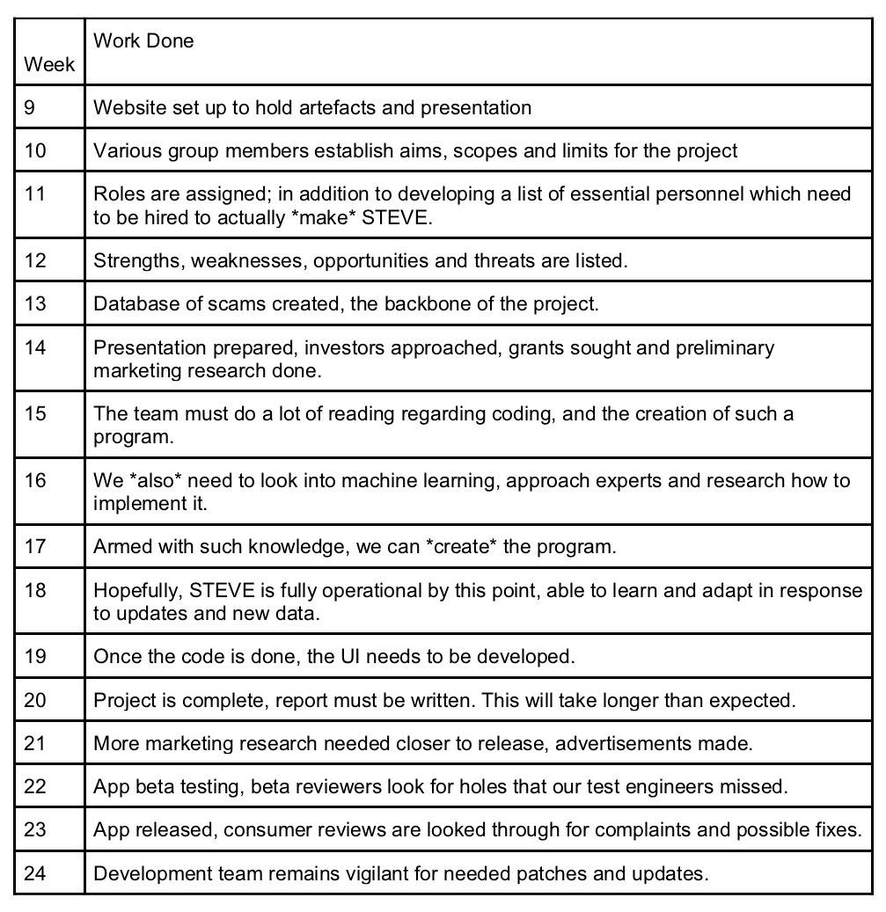

Aims
S.T.E.V.E aims to educate its users about harmful malware and how to defend against such devious malware from affecting their computers performance to securing their personal details. Not only does S.T.E.V.E educate the users on how to fend off malware, but it also assists in detection and the removal of the ransomware. In order to achieve the goal of educating users on protecting themselves from ransomware, a database of existing scams and ransomware need to be created and acknowledged by S.T.E.V.E along with the solution to the issue. Experts in the cybersecurity and machine learning sector must also review and assist in implementing their expertise to make S.T.E.V.E run as intended, to educate and defend. As for the aesthetics of S.T.E.V.E, they don't need to be overly fancy, with the reviews and as time goes on during the testing and public release, the interface can always change and update along with the new patches of the program.
If troubles occur during the making of S.T.E.V.E, the most important part of the project would be the plan B, to educate as opposed to educate and protect. If possible, S.T.E.V.E will still have the ability to detect ransomware and notify the user, if not, it'll be up to the user to use what they've learnt from S.T.E.V.E to defend against the issue that they have. Ransomware are being developed and require time to find a solution to cease the malware, therefore S.T.E.V.E will always be at least one step behind the developers of such programs. There is no solution to this issue, only to stay behind and catch up to prevent the malware from infecting more victims
Plans and Progress
As reiterated previously, S.T.E.V.E is a cybersecurity software designed to enhance information security and protect a computer, network or any computing-enabled device. It provides firewall protection(block network traffic), data protection, secures computers/systems against viruses, malware(damage or gain access to computer system), internet/network intrusions etc. But what it makes it different from our competitors is it’s also used an educational tool. To put it simply, this is the ultimate security software, that this group has envisioned. Unfortunately, due to the substantial amount of planning that needs to be done such as the user interface (how it will be presented), the level of expertise and coding to design such an application and the amount of money to design a security software in a global scale presents challenging obstacles. However, that is not to say that it is impossible- we plan to approach this in little steps combined with efficient planning; making sure errors and hardship can be dealt with immediately and effectively to limit costs and time. The project began with an idea that we felt would positively impact society, thus the creation of S.T.E.V.E. Once this was completed- ideas, limits, technology, developers and many planning had begun to initiate the project, we soon came to the realization that planning and executing S.T.E.V.E would be difficult and time consuming. Therefore, we cut out the educational section of the project along with some features in order to reduce the time restraint and money and as we generate more revenue we can invest more resources into the project to complete S.T.E.V.E. If this software does become successful and income starts to generate then it will be used to strengthen the software by providing additional and new features, more research on cybersecurity and innovation tactics to prevent viruses and malware. We are projected to complete the basics of a security software within a couple of months through combined knowledge of expertise in specific fields and our own research, which includes an antivirus feature, auto-cleaning and real-time scanning. As of now, no features have been directly implemented within the software but plans and tests have been done to replicate the final product, this is because we believe the plan to be a blueprint and should strictly be followed especially if we were to hand over to another team to complete. Of course, it will continue to alter and change if we deem necessary. We hope that S.T.E.V.E will continue to progress at a reasonable rate and one day see the final outcome we have envisioned.
Scope and Limits
With little experience and time as a team, there will not be enough capacity to complete a fully functioning program to match our vision. This will ultimately mean that the application won’t be capable of educating our potential and future users of all malicious viruses. As we have intended to educate our users of all virus possible, when the application has successfully been executed and prevented the infection of the virus. It would then educate the user of the causes and outcomes if this virus had successfully intercepted into the device. Then further explaining how to prevent this mistake from happening again. However due to the level cap of skills decreasing the time available to us, will not allow us to have all features available. Meaning we can create an application which prevents all types of viruses but not being able to implement the idea of educating our users about all viruses. And in later stages this can be updated with patches and updates, to make it fully functioning to our desired vision. The scope this project will create and present a fully functioning anti-virus application, however unsure to the degree and advancement this will hold. Meaning how efficient and well this application will compare to competitors such as Norton and avast, whom might have a program much more advanced compared to what we will be able to produce in with our limited skill and time available. Continuing, this will then lead to our limitation of then preventing us possible of not being able to implement the main and purpose for this application, the educating phase.
Tools and Technologies
As our technology is largely software based we will need to acquire a software license for our program S.T.E.V.E,the point of the software license is to ensure that our program can meet certain guidelines as well as be reputable in the eyes of the public. The license also ensures that people will not copy our program and we can place a copyright on the program as well. We will need something like a public domain license to enable us to sell off our program. To develop our program a simple laptop or computer will not suffice, we will need multiple high end machines to ensure that the team we establish will able to do vigorous tests on our applications and run some tricky programming to make sure that there is a very high amount of security prevention installed within the application. We will also need to establish a server for the application, as the application is security plus education there will be an automated learning facility built in to the app. This learning facility will teach the program what are common ways of security threats and cybercrime. This data will need to be stored on a database as well as a server so we can relay the information back to the user via the internet. Our group has limited amount of prior experience with security and app development; however it is great that we are learning programming so we can use our knowledge we are gaining to help create this app.
Testing
Our product will be test via running several test of pre-maid virus containing content to see if it can actually recognise and defeat it. If this is achieved the next step will be delivering to the user what the virus was and what caused it and how can the user prevent this from happening again. However this will be displayed in a beginner user friendly way as this is also a learning experience for average users on the internet who are unfamiliar with the infectious viruses. The user testing method that will be undertaken is finding any user who is an internet user or explorer who is unfamiliar with viruses or who wants to learn more. And then allow them to conduct searches and exploration on a pre made environment which has viruses implemented in it for the user to have a for filling experience and testing for the ultimate feedback. This test will ultimately be run by over 100 individuals with different skills and sets to have this as a diverse application for all users.
Timeframe

Risks
Our group has laid out a concise plan to try and develop our project to the best of our abilities but unfortunately there are certain risks we have to be aware of as with many things in life. Probably the biggest risk of our security software is hackers being able to figure out how to compromise the software and infiltrate our users’ machines. We would have to do vigorous beta testing and hire pen testers to see whether our software is secure enough to sell to the public. Should our software have security flaws in them it could ruin our entire project as we are new to the security software market. We are promising users a top of the range software that will educate them on how their computer can be vulnerable as well as prevent threats inside their own computer. It will be quite an advanced software and there is a big risk that the usability of our software would be too difficult for the average user. There is also another risk that our software will not sell as well as we hope, considering its an artificial learning program, developing the software could prove costly and we may have to pass that cost onto the consumer. This could mean that actually buying the software could come at a high cost and if it is too expensive, we may not be able to make ends meet. To minimize these risks we would have to have a very experienced team in the field which can code an un-impenetrable security software as well as a great marketing and advertising team to ensure that we can prove to users why our software is of utmost importance for their personal computers, no matter how little experience the user would have.
Group processes and communications
Communication within a group is crucial for projects, it's the make or break in a lot of group projects. To maintain contact with each group member, one main point of communication must be enforced, in this case Facebook Messenger is used as most members have Facebook Messenger. Snapchat and other means of communications could also be useful such as skype, but as time goes on, most often than not, people migrate to other platforms such as Discord, however, the platform that most members are active on and is very easy to access is Messenger. Meetings would also have to be a must, especially if people have done all if not, most of the work that they’ve been assigned because that’s when slight alterations can be made. The first week should be finalising the idea and after that, progress can be made. Meetings could also improve the quality of each individual’s work as they’ll gather insight to how their part corresponds to other member’s, to put all the pieces of the project together and make sure the project doesn’t fall apart. Meetings should take place at least once a week to make sure everyone’s on track and haven’t swayed away from the original goal. If a member does not respond to communications, the members will try their best to get a hold of the member, if there is no way in getting a hold of them, asking the teacher for their number or attempting to ask one of their friends to notify them that the group needs the member to respond, if the member fails to even show up to the classes and there is no way to contact them, each member would then have to put in extra work in case the member hasn’t completed any work or made any progress.